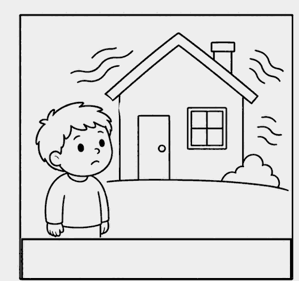
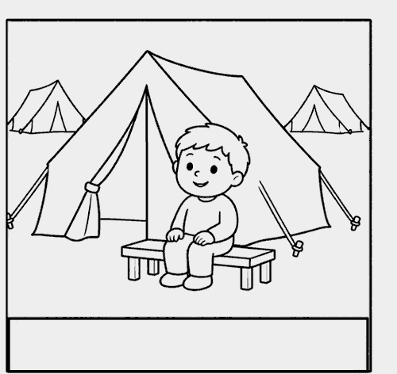
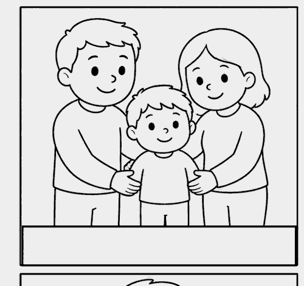
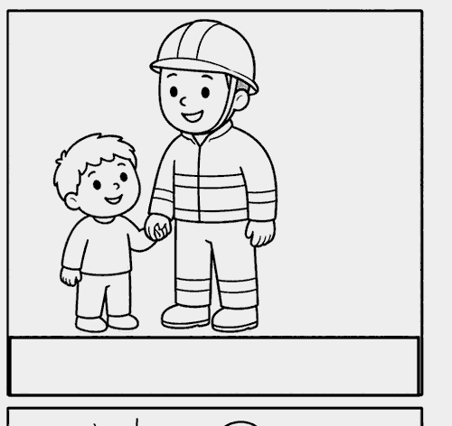
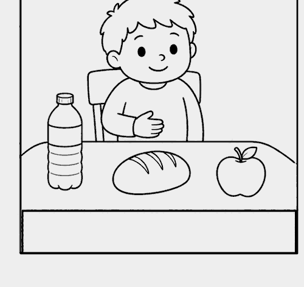
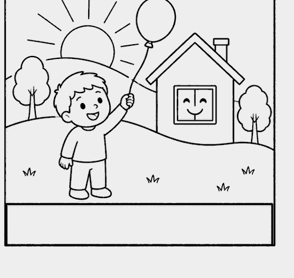

Misericordia di AricciaConfraternita di Misericordia di Ariccia ODV
Bambini · 3-5 anni · Inclusione
Cosa sta succedendo
Storia sociale a sequenza visiva (utile anche per autismo, italiano L2)
3-5 anni · adatta a bambini con autismo / L2📖 Leggi insieme al bambino seguendo le immagini con il dito. Una sequenza alla volta, calma. Ripeti se serve. Per l'adulto: prima di leggere, adatta le frasi a ciò che è vero per questo bambino (per esempio se un familiare non c'è) e non fare promesse.
1

È successa una cosa difficile. Non posso stare a casa adesso.
2

Sto in una tenda con altre persone. Qui sono più al sicuro.
3

Ci sono persone che mi vogliono bene e si prendono cura di me.
4

I volontari mi aiutano. Hanno il casco.
5

Ho da mangiare. Ho da bere. Se non sto bene, lo dico a un adulto.
6

Gli adulti lavorano per trovarci una casa. Ci vorrà un po' di tempo.